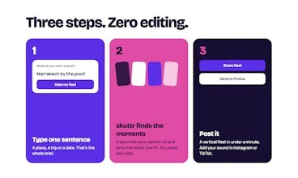

把相册主题写成一句话
skuttr的入口是一句主题，例如某次旅行或某个日期的多年片段。它在iPhone相册里找候选照片与视频，规划顺序，再生成可保存的竖版Reel。11月9日Product Hunt通讯介绍了这一流程；这证明近期平台出现，不能替代首次上架日期。官网所述输出是15至30秒无声短片，音乐仍需到Instagram或TikTok添加。对只是想把经历发出去的人，省掉的是逐张挑选和排序，而不是所有后期工作。选择好看画面、保留旅行叙事与避免带入不想公开的人物，仍是三个不同的判断。
skuttr · 消费创作软件／产品更新

skuttr的入口是一句主题，例如某次旅行或某个日期的多年片段。它在iPhone相册里找候选照片与视频，规划顺序，再生成可保存的竖版Reel。11月9日Product Hunt通讯介绍了这一流程；这证明近期平台出现，不能替代首次上架日期。官网所述输出是15至30秒无声短片，音乐仍需到Instagram或TikTok添加。对只是想把经历发出去的人，省掉的是逐张挑选和排序，而不是所有后期工作。选择好看画面、保留旅行叙事与避免带入不想公开的人物，仍是三个不同的判断。
在原始Product Hunt问答里，有人问能否在导出前替换一个镜头，作者回复首版生成后顺序固定，建议用更具体的句子得到不同结果，也可在发布平台裁剪普通视频。这是明确的交互取舍：少一个编辑器，第一次成片的操作更短，但一个不合适的镜头可能需要重生成整段。作者还表示找不到合适匹配会直接告知，不强行拼片。我们没有测试匹配质量。值得核对的是，用户修改主题后究竟改变了哪些素材，以及系统拒绝生成时是否给出足够具体的原因；单靠“再描述一次”可能仍让人摸不清选择依据。
官方隐私页的可检索正文说明，寻找候选和最终渲染在手机上完成；地点文字会用于Apple地图查找，场景标签留在设备。获得许可后，句子与低清预览发给OpenAI规划，同时可能包含拍摄日期及视频长度。它没有把整套原片上传给模型，但预览里仍可能有人脸。后台还保存生成状态与用量等账户关联记录。由此不能把“不上传原片”简写成“完全离线”。原文网页直接打开受限，本期只采用实际可读的官方索引段落，并把隐私承诺视为厂商声明，未进行网络流量验证。
官网当前列出每台iPhone前五个完成的视频免费，找不到匹配、出错或取消不消耗这份额度；美国价格为每月4.99美元或每年29.99美元，Pro每天最多20个。网站要求iOS17以上，尚无Android或iPad版本。它不适合希望逐镜精剪、一次完成配乐字幕的人，却可以服务原本一直不发相册的人。采用时可用一组不敏感素材，检查主题命中、开头选择与重生成后的可控性，再决定这种简化是否真的适合自己的习惯；价格和平台限制以商店最终显示为准，不能由PH票数推算使用或续费。